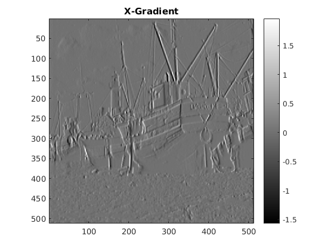
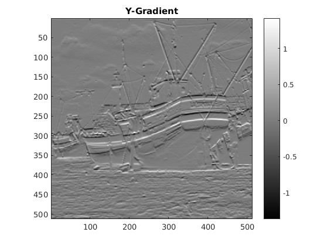
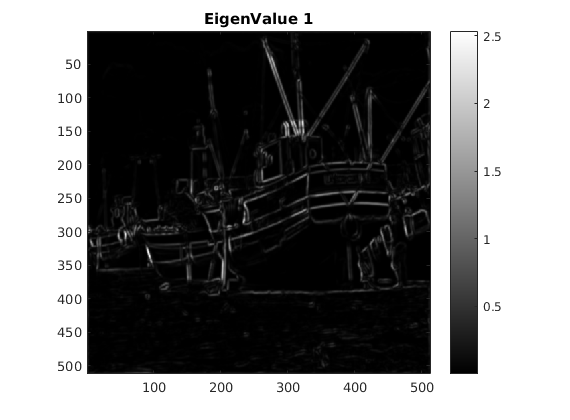
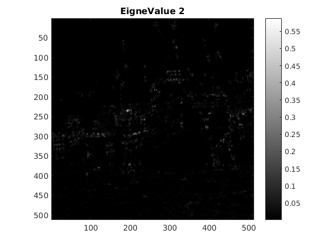
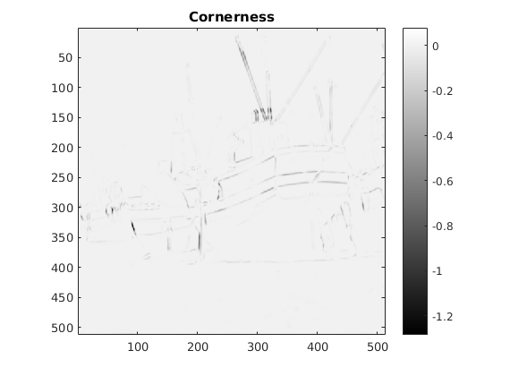
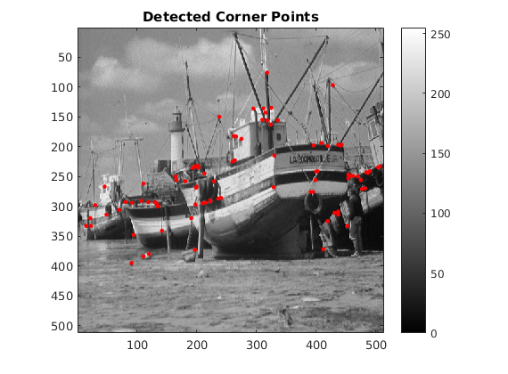

Contents
MyMainScript
close all;
Initializing the colorScale
myNumOfColors = 256; colorScale = 0:1/(myNumOfColors-1):1; myColorScale = [ colorScale' colorScale' colorScale' ]; tic;
Hyperparameters Used
Sigma of Gaussian for Image Blur = 1 Sigma of Gaussian for Structure Tensor = 1 K 0.2
load('../data/boat.mat','imageOrig'); [Ix,Iy,e1,e2,cornerness,C] = myHarrisCornerDetector(imageOrig,1,1,0.2);
X-Gradient
figure;colormap(myColorScale);imagesc(Ix);title('X-Gradient');daspect ([1 1 1]);axis tight;colorbar;
Y-Gradient
figure;colormap(myColorScale);imagesc(Iy);title('Y-Gradient');daspect ([1 1 1]);axis tight;colorbar;
EigenValue1
figure;colormap(myColorScale);imagesc(e1);title('EigenValue 1');daspect ([1 1 1]);axis tight;colorbar;
EigenValue2
figure;colormap(myColorScale);imagesc(e2);title('EigneValue 2');daspect ([1 1 1]);axis tight;colorbar;
Cornerness
figure;colormap(myColorScale);imagesc(cornerness);title('Cornerness');daspect ([1 1 1]);axis tight;colorbar;
Corner Points
figure; colormap(myColorScale); [markx , marky] = find(C>0.005); imagesc(imageOrig); daspect ([1 1 1]); axis tight; axis on; hold on; for i = 1:size(markx,1) plot(marky(i),markx(i),'r.','MarkerSize',10); end colorbar; title('Detected Corner Points'); toc;
Elapsed time is 4.060210 seconds.